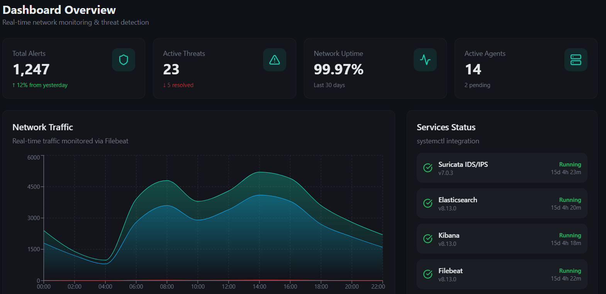
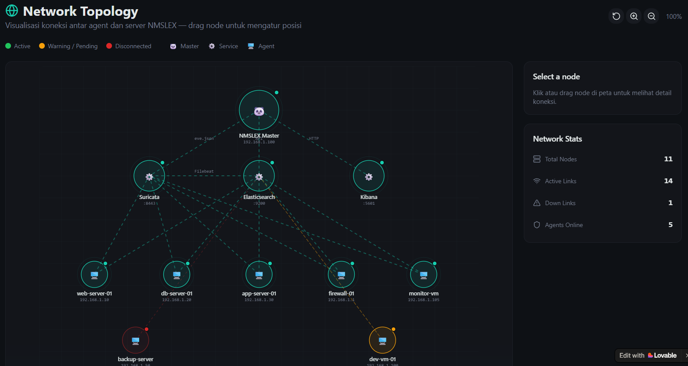
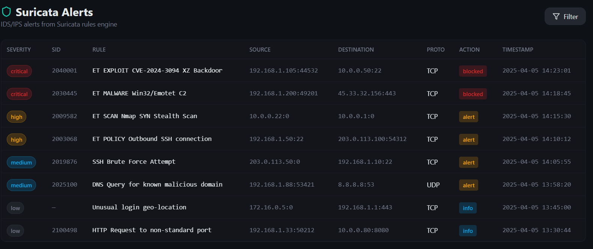

Network Management System
Monitor, kelola, dan amankan jaringan Anda secara real-time.
Terintegrasi dengan Suricata IDS, Elasticsearch, dan Kibana.
Semua yang Anda butuhkan untuk monitoring dan keamanan jaringan dalam satu platform.
Real-time threat detection menggunakan Suricata rules. Deteksi intrusi, malware, dan anomali jaringan.
Dashboard interaktif dengan grafik real-time untuk memantau seluruh jaringan dari satu tempat.
Pencarian dan analisis log terpusat via Elasticsearch. Filter berdasarkan severity, IP, dan waktu.
Kelola semua VM/host yang dimonitor. Lihat status, metrics, dan detail setiap agent.
Visualisasi topologi jaringan interaktif. Drag & drop nodes untuk mengatur layout.
Notifikasi realtime via Telegram untuk critical alerts. Setup mudah dari dashboard.
Kelola akun admin, operator, dan viewer. Role-based access control terintegrasi.
Export laporan keamanan profesional dalam format PDF. Jadwalkan laporan otomatis.
Sound alert dan badge counter realtime. Notifikasi berbeda berdasarkan severity level.
Interface modern dan intuitif untuk monitoring jaringan Anda.



Stack terintegrasi untuk monitoring dan keamanan end-to-end.
| Service | Port | Fungsi |
|---|---|---|
nmslex-dashboard | 7356 | Web UI Dashboard |
nmslex-manager | — | Service orchestration & health check |
nmslex-indexer | — | Log rotation & indexing |
elasticsearch | 9200 | Search engine & data store |
kibana | 5601 | Data visualization |
suricata | — | IDS/IPS engine |
filebeat | — | Log collection agent |
Spesifikasi minimal dan rekomendasi untuk deployment.
| Agents | vCPU | RAM | Disk |
|---|---|---|---|
| 1–5 | 2 | 4 GB | 50 GB SSD |
| 6–10 | 4 | 8 GB | 100 GB SSD |
| 11–20 | 4 | 16 GB | 200 GB SSD |
| 21–50 | 8 | 32 GB | 500 GB SSD |
| 50+ | 16 | 64 GB | 1 TB SSD |
| Komponen | Minimum | Rekomendasi |
|---|---|---|
| vCPU | 1 | 1 |
| RAM | 512 MB | 1 GB |
| Disk | 5 GB | 10 GB |
| Network | 100 Mbps | 1 Gbps |
Agent sangat ringan — hanya menjalankan Filebeat dan heartbeat script.
Deploy NMSLEX di VM lokal dengan satu perintah.
git clone https://github.com/LutfyAlfean/nmslex.git
cd nmslexchmod +x deploy.sh
sudo ./deploy.shScript akan otomatis install semua dependencies, build dashboard, dan start services.
http://<IP_SERVER>:7356Login dengan credentials yang ditampilkan saat deploy selesai.
sudo ./deploy.sh --rebuild
Rebuild setelah perubahan kode
sudo ./deploy.sh --reset
Reset konfigurasi ke default
sudo ./deploy.sh --uninstall
Hapus seluruh instalasi
sudo ./deploy.sh --interface ens33
Deploy dengan interface custom
Tambahkan monitoring ke setiap VM/host dengan agent ringan.
# Copy script dari server
scp user@nmslex-server:/opt/nmslex/scripts/nmslex-agent-install.sh .
# Install agent
sudo ./nmslex-agent-install.sh --server 192.168.1.100
# Dengan opsi lengkap
sudo ./nmslex-agent-install.sh \
--server 192.168.1.100 \
--name web-server-01 \
--interface ens33 \
--log-paths "/var/log/nginx/access.log,/var/log/nginx/error.log"
# Verifikasi
sudo systemctl status nmslex-agent
sudo /opt/nmslex-agent/bin/nmslex-agent test-connection